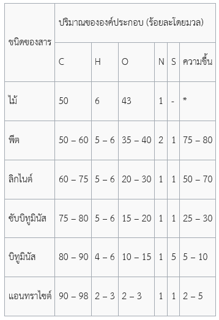

1. ความหมายของเชื้อเพลิงซากดึกดำบรรพ์
เชื้อเพลิงซากดึกดำบรรพ์ หรือ เชื้อเพลิงฟอสซิล (อังกฤษ: fossil fuel; เชื้อเพลิงซากดึกดำบรรพ์เป็นศัพท์ทางธรณีวิทยา ส่วนเชื้อเพลิงฟอสซิลเป็นศัพท์ทางวิศวกรรมเครื่องกล[1]) หรือแร่เชื้อเพลิง (อังกฤษ: mineral fuel) เป็นเชื้อเพลิงอันเกิดแต่ซากดึกดำบรรพ์ซึ่งได้แก่ไฮโดรคาร์บอนที่พบจากช่วงชั้นดิน (layer) ด้านบนสุดของเปลือกโลก
เชื้อเพลิงซากดึกดำบรรพ์มีตั้งแต่แร่สารระเหยสูง (volatile material) ซึ่งมีอัตราคาร์บอนต่อไฮโดรเจนต่ำ เป็นต้นว่า แก๊สมีเทน ไปจนถึงปิโตรเลียมเหลว (liquid petroleum) และแร่ไร้สารระเหย (nonvolatile material) ซึ่งแร่ไร้สารระเหยนี้มักประกอบด้วยคาร์บอนบริสุทธิ์ เป็นต้นว่า ถ่านแอนทราไซต์ (anthracite coal) ทั้งนี้ แก๊สมีเทนอันมีในแร่สารระเหยสูงเช่นว่าสามารถพบได้ในสารจำพวกไฮโดรคาร์บอนเพียงจำพวกเดียวก็ได้ ในสารจำพวกไฮโดรคาร์บอนประสมกับน้ำมันก็ได้ และในรูปมีเทนผังหนา (methane clathrate) ก็ได้
ใน พ.ศ. 2548 องค์การข้อมูลข่าวสารด้านพลังงานแห่งสหรัฐอเมริกา (United States Energy Information Administration) ได้ประเมินว่าในบรรดาผลิตผลจากพลังงานในโลกนี้ ร้อยละแปดสิบหกมีต้นกำเนิดจากการเผาผลาญเชื้อเพลิงซากดึกดำบรรพ์ ร้อยละหกจุดสามกำเนิดแต่พลังงานไฟฟ้าจากน้ำ (hydroelectric) และร้อยละหกจากพลังงานนิวเคลียร์ ส่วนร้อยละศูนย์จุดเก้าที่เหลือจากแหล่งพลังงานอื่น ๆ เป็นต้นว่า ความร้อนจากธรณีภาค (geothermal) พลังงานแสงอาทิตย์ พลังงานลม พลังงานจากไม้ และพลังงานจากของใช้แล้ว
2. ถ่านหิน
ถ่านหิน (Coal)ถ่านหิน เป็นหินตะกอนที่กำเนิดมาจากซากพืช ลักษณะแข็งแต่เปราะ มีสีน้ำตาลถึงดำ มีทั้งชนิดผิวมันและผิวด้าน องค์ประกอบหลักในถ่านหินคือธาตุคาร์บอน และธาตุอื่น ๆ เช่น ไฮโดรเจน ออกซิเจน ไนโตรเจน และกำมะถัน นอกจากนี้อาจพบธาตุที่มีปริมาณน้อย เช่น ปรอท สารหนู ซีลีเนียม โครเมียม นิกเกิล ทองแดง และแคดเมียม ซึ่งเป็นสาเหตุสำคัญที่ก่อให้เกิดปัญหากับสุขภาพและสิ่งแวดล้อม ปริมาณสำรอง ประกอบด้วยปริมาณที่พิสูจน์แล้วและปริมาณที่ยังไม่ได้พิสูจน์ ปริมาณสำรองที่พิสูจน์แล้วคือปริมาณที่ค้นพบแล้ว และจะสามารถผลิตขึ้นมาใช้ให้คุ้มค่าได้ค้อนข้างแน่นอน ปริมาณสำรองของถ่านหินที่มีอยู่ในปัจจุบันทั่วโลกจะใช้ได้อีก 250 ปี การเกิดถ่านหิน
พืชในยุคโบราณเมื่อประมาณ 350 ถึง 280 ล้านปีที่ผ่านมา เมื่อตาบลงแล้วเกิดการทับถมและเน่าเปื่อยผุพังอยู่ใต้แหล่งน้ำและโคลตม เมื่อเกิดการเปลี่ยนแปลงของผิวโลก เช่น แผ่นดินไหว หรือภูเขาไฟระเบิด ซากพืชเหล่านี้จะจมลงไปในผิวโลก ภายใต้ความร้อนและความดันสูง ซากพืชเหล่านี้ซึ่งอยู่ในภาวะที่ขาดออกซิเจนหรือมีออกซิเจนขำกัดจะเกิดการย่อยสลายอย่างช้า ๆ โครงสร้างของพืชซึ่งประกอบด้วยเซลลูโลส น้ำ และลิกนิน ซึ่งมีธาตุองค์ประกอบเป็นคาร์บอน ไฮโดรเจน และออกซิเจน เมื่อถูกย่อยสลายให้มีขนาดโมเลกุลเล็กลง คาร์บอนจะเปลี่ยนแปลงเป็นสารประกอบอินทรีย์ที่มีปริมาณคาร์บอนตั้งแต่ร้อยละ 50 โดยมวล หรือมากกว่าร้อยละ 70 โดยปริมาตร ส่วนไฮโดรเจนและออกซิเจนจะเกิดเป็นสารประกอบอื่นแยกออกไป
ปัจจัยที่มีผลต่อสมบัติของถ่านหิน การที่สมบัติทางกายภาพและทางเคมีของถ่านหินตามแหล่งต่าง ๆ แตกต่างกัน เป็นผลจากปัจจัยหลายอย่างดังนี้ 1. ชนิดของพืช 2. การเน่าเปื่อยที่เกิดขึ้นการถูกฝังกลบ 3. ปริมาณสารอนินทรีย์ที่ปนเปื้อนในขั้นตอนการเกิด 4. อุณหภูมิและความดันในขณะที่มีการเปลี่ยนแปลง ประเภทของถ่านหิน 1. พีต (Peat) 2. ลิกไนต์ (Lignite) หรือถ่านหินสีน้ำตาล 3. ซับบิทูมินัส (Sub–bituminous) 4.บิทูมินัส (bituminous) 5. แอนทราไซต์ (Anthracite)
ปริมาณร้อยละของธาตุองค์ประกอบและความชื้นของถ่านหินชนิดต่าง ๆ เทียบกับไม้
ชนิดของสาร ปริมาณขององค์ประกอบ (ร้อยละโดยมวล)

* ขึ้นอยู่กับชนิดของพันธุ์ไม้แกรไฟต์เมื่อเผาไหม้จะให้พลังงาน 32.8 kJ/g แต่การเผาถ่านหินจะให้พลังงานความร้อนเฉลี่ย30.6 kJ/g แสดงว่าพลังงานความร้อนที่ได้จากการเผาถ่านหินจะขึ้นอยู่กับปริมาณของคาร์บอนที่เป็นองค์ประกอบในถ่านหิน ดังนั้น การเผาไหม้ถ่านหินแต่ละชนิดที่มีมวลเท่ากันจะให้พลังงานความร้อนแตกต่างกันตามปริมาณคาร์บอนที่มีอยู่ในถ่านหินซึ่งมีลำดับจากมากไปหาน้อยดังนี้คือแอนทราไซต์บิทูมินัส ซับบิทูมินัส ลิกไนต์ และพีต 1.2 การใช้ประโยชน์จากถ่านหิน 1. ถ่านหิน ถูกนำมาใช้เป็นแหล่งพลังงานมากกว่า 3000 ปี ประเทศจีนเป็นประเทศแรก ๆ ที่นำถ่านหินมาใช้เป็นเชื้อเพลิงในการถลุงทองแดง ปัจจุบันการใช้ประโยชน์จากถ่านหินส่วนใหญ่ใช้เป็นเชื้อเพลิงในการผลิตกระแสไฟฟ้า การถลุงโลหะ การผลิตปูนซีเมนต์ และอุตสาหกรรมที่ใช้เครื่องจักรไอน้ำ การผลิตกระแสไฟฟ้าทั่วโลกใช้พลังงานจากถ่านหินประมาณร้อยละ 39 2. แหล่งถ่านหินในประเทศไทยมีมากที่เหมืองแม่เมาะ จังหวัดลำปาง คิดเป็น 97% ของปริมาณสำรองที่มีอยู่ในประเทศไทย รองลงมาคือเหมืองกระบี่ จังหวัดกระบี่ ส่วนใหญ่เป็นลิกไนต์และซับบิทูมินัส ซึ่งมีคุณภาพต่ำ ให้ปริมาณความร้อนไม่สูงมากนัก 3. ถ่านหินยังนำมาทำเป็น ถ่านกัมมันต์ (Activated carbon) เพื่อใช้เป็นสารดูดซับกลิ่นในเครื่องกรองน้ำ เครื่องกรองอากาศ หรือในเครื่องใช้ต่าง ๆ ทำคาร์บอนไฟเบอร์ซึ่งเป็นวัสดุที่มีความแข็งแกร่ง แต่นำหนักเบา สำหรับใช้ทำอุปกรณ์กีฬา เช่น ด้ามไม้กอล์ฟ ไม้แบดมินตัน ไม้เทนนิส 4. นักวิทยาศาสตร์พยายามเปลี่ยนถ่านหินให้เป็นแก๊ส และแปรสภาพถ่านหินให้เป็นของเหลว เพื่อเพิ่มคุณค่าทางด้านพลังงานและความสะดวกในการขนส่งด้วยระบบท่อส่ง เชื้อเพลิงแก๊สหรือของเหลวนี้จะถูกเปลี่ยนเป็นผลิตภัณฑ์เคมีอื่น ๆ ที่มีประโยชน์ รวมทั้งเป็นการช่วยเสริมปริมาณความต้องการใช้เชื้อเพลิงธรรมชาติจากปิโตรเลียมด้วย 5. การเผาไหม้ของถ่านหิน จะได้ผลิตภัณฑ์เป็นแก๊สที่ขึ้นอยู่กับองค์ประกอบของถ่านหิน ได้แก่ CO2 , CO , SO2 , NO2
CO2 เป็นสาเหตุของสภาวะเรือนกระจก
CO เป็นแก๊สไม่มีสีและไม่มีกลิ่น เป็นแก๊สพิษ เมื่อสูดดมเข้าไปมากจะทำให้มึนงง คลื่นไส้ อาจหมดสติถึงตายได้
SO2 และ NO2 ทำให้เกิดการระคายเคืองต่อระบบหายใจและปอด เป็นสาเหตุสำคัญของภาวะมลพิษในอากาศ เป็นสาเหตุของฝนกรด ทำให้น้ำในแหล่งน้ำต่าง ๆ มีความเป็นกรดสูงขึ้น ส่งผลต่อการเจริญเติบโตของทั้งพืชและสัตว์
3. น้ำมันดิบ
เป็นแร่เชื้อเพลิงที่มีสถานะเป็นของเหลว มีองค์ประกอบส่วนใหญ่เป็นสารประกอบของไฮโดรเจนและคาร์บอน จึงถูกเรียกว่าเป็นสารประกอบไฮโดรคาร์บอนที่พบบ่อยที่สุด ที่มีสีน้ำตาลแกมเขียว แต่อาจพบสีอื่นบ้าง เช่น สีเหลืองเข้ม น้ำตาลเกือบดำ ประกอบอยู่ด้วย เช่น กำมะถัน (S), ไนโตรเจน (N), ออกซิเจน (O) เป็นต้น ด้วยเหตุนี้น้ำมันดิบที่ขุดขึ้นมาจะยังไม่สามารถนำไปใช้ประโยชน์ได้ทันที ต้องมีการนำมาแยกสารประกอบไฮโดรคาร์บอนต่าง ๆ ออกเป็นกลุ่ม ๆ ก่อน จึงจะสามารถนำไปใช้ประโยชน์ตามชนิดของสารได้ โดยการวิธีการแยกสารที่ปนอยู่ในน้ำมันดิบออกจากกันนี้ เรียกว่า การกลั่นน้ำมันดิบ เมื่อนำน้ำมันดิบมากลั่นแยกจะได้น้ำมันเชื้อเพลิงและน้ำมันหล่อลื่นสำหรับเครื่องยนต์ ประเภทต่างๆ ให้พลังงานความร้อนและแสงสว่าง ส่วนที่เหลือจากการกลั่นน้ำมัน และก๊าซหุงต้มแล้ว นำไปใช้เป็นวัตถุดิบของอุตสาหกรรมปิโตรเคมิคัลนำมาใช้ ประดิษฐ์ของใช้สำเร็จรูปอื่นๆอีกประมาณ 300 ชนิด เช่น สารพวกพลาสติก ไนลอน เส้นใยสังเคราะห์ ปุ๋ย ยารักษาโรค สีผงซักฟอก เป็นต้นกากที่เหลือตกค้างซึ่งเป็นส่วน ที่หนักที่สุดจะได้แก่ ยางมะตอยซึ่งนิยมนำมาทำผิวถนนลาดยาง น้ำมันดิบเกิดจากการทับถมของสิ่งมีชีวิตทั้งพืชและสัตว์ในสมัยอดีต มีหินปูน ดินเหนียว ทรายและอื่นๆ ตกตะกอนทับถมมาเป็นชั้นๆ ต่อมาเมื่อมีการเปลี่ยนแปลงทางด้าน ของแรงกดดันและอุณหภูมิในชั้นหิน ทำให้เกิดการแปรสภาพทางเคมีและฟิสิกส์ กลายเป็นสารประกอบไฮโดรคาร์บอนเป็นน้ำมันดิบแทรกตัวอยู่ในเนื้อของหินดินดาน หินทรายและหินปูนที่มีเนื้อพรุน แหล่งที่พบมาก คือ อำเภอฝาง จังหวัดเชียงใหม่และในอ่าวไทย
4.ก๊าซธรรมชาติ
เกิดเช่นเดียวกับน้ำมันและถ่านหินเป็นสารประกอบไฮโดรคาร์บอนที่อยู่ในสถานะของก๊าซส่วนใหญ่ประกอบไปด้วยก๊าซมีเทนก๊าซนี้นอกจากจะได้จาก แหล่งธรรมชาติแล้วยังได้จากการกลั่นน้ำมันและอาจกลั่นหรือสกัดจากขยะหรือ โรงกำจัดของเสียต่างๆ แต่ได้ปริมาณน้อย สามารถนำมาใช้เป็นพลังงานแทนน้ำมันดิบได้ การใช้ก๊าซธรรมชาติเป็นเชื้อเพลิงหุงต้ม ประกอบอาหารหรือให้ความอบอุ่นหรืออื่นๆ ต้องใช้ความระมัดระวังถ้าเกิดการรั่วอาจติดไฟและระเบิดได้ง่าย การเจาะหาแหล่งน้ำมันในอ่าวไทยปรากฏพบก๊าซธรรมชาติเป็นจำนวนมาก และสามารถนำมาใช้ได้ตั้งแต่เดือนกันยายน พ.ศ. 2524 ถึงปัจจุบัน ก๊าซธรรมชาติเมื่อถูกอัดด้วยความดันสูงและส่งผ่านท่อจากบ่อน้ำมัน หรือถูกทำให้เป็นของเหลวและเก็บเป็น LPG ( Liguefied Petroleum Gas ) จัดเป็นก๊าซธรรมชาติซึ่งได้จากการกลั่นแล้วบรรจุในภาชนะในสภาพ ที่เป็นของเหลวภายใต้ความดันสูง มีองค์ประกอบที่สำคัญคือโพรเพนและบิวเทน ซึ่งมีชื่อเรียกทางการค้าหลายชื่อ เช่น ก๊าซปิโตรเลียมเหลว ก๊าซหุงต้ม ก๊าซเหลว เป็นต้น ใช้ในครัวเรือนและวงการอุตสาหกรรมมาก ปกติ LPGเป็นก๊าซที่ไม่มีกลิ่นฉะนั้นเพื่อความปลอดภัย จึงเติมกลิ่นลงไปเพื่อเตือนให้ทราบในกรณีที่ก๊าซรั่ว สารที่เติมลงไป คือ Ethyl mercaptan , Thiophane sulphide เป็นต้น โดยเติม 680 กรัมต่อ 1,000 แกลลอนของ LPG
5. แร่นิวเคลียร์
หมายถึง แร่ที่มีการแตกตัวของนิวเคลียสของธาตุซึ่งไม่เสถียร เนื่องจากมีพลังงานส่วนเกินอยู่ภายในนิวเคลียสมากจึงต้องถ่ายเทพลังงานส่วนเกินนี้ ออกมาเพื่อให้กลายเป็นอะตอมของธาตุที่เสถียร แร่นิวเคลียร์มี 2 ชนิดคือแร่กัมมันตภาพรังสี เป็นแร่ที่มีสมบัติในการปล่อยรังสีออกจากตัวเองอย่างต่อเนื่องตลอดเวลา ซึ่งไม่สามารถมองเห็นได้เนื่องจากกัมมันตภาพรังสีที่ปล่อยออกมาเป๋นคลื่นสั้น ได้แก่ ยูเรเนียม ทอเรียม ส่วนอีกชนิดหนึ่งเป็นแร่ที่ไม่ส่งกัมมันตภาพรังสีออกมาใช้ประโยชน์ ในการควบคุมการแตกตัวของนิวเคลียสของแร่กัมมันตภาพรังสี ได้แก่ เมอริลและโคลัมเนียม
6. พอลิเมอร์
พอลิเมอร์ความหมายของพอลิเมอร์นั้นก็มาจากรากศัพท์กรีกสำคัญ 2 คำ คือ Poly (จำนวนมาก) และ Meros (ส่วน หรือ หน่วย) พอลิเมอร์เป็นสารโมเลกุลขนาดใหญ่ (Macromolecule) พอลิเมอร์จะประกอบไปด้วยหน่วยซ้ำกัน (repeating unit) ของมอนอเมอร์ (Monomer) หลายๆหน่วยมาทำปฏิกิริยากัน มอนอเมอร์นี้จัดเป็นสารไมโครโมเลกุล (Micromolecule) ชนิดหนึ่ง พอลิเมอร์ที่ประกอบด้วยหน่วยย่อยหรือมอนอเมอร์ชนิดเดียวกันทั้งหมด จัดเป็นโฮโมพอลิเมอร์ (Homopolymer) แต่ถ้ามีมอนอเมอร์ต่างกันตั้งแต่ 1 ชนิดขึ้นไป จัดเป็นโคพอลิเมอร์ (Copolymer) สารบางอย่างที่มีสมบัติอย่างพอลิเมอร์ เช่น สารพวกไขมันที่มีแต่ละหน่วยที่ไม่ซ้ำกันนั้นจะเป็นเพียงแค่สารแมคโครโมเลกุลเท่านั้น ไม่จเดยลิเมอร์
7. พลาสติก
พลาสติก เป็นสารประกอบอินทรีย์ที่สังเคราะห์ขึ้นใช้แทนวัสดุธรรมชาติ บางชนิดเมื่อเย็นก็แข็งตัว เมื่อถูกความร้อนก็อ่อนตัว บางชนิดแข็งตัวถาวร มีหลายชนิด เช่น ไนลอน ยางเทียม ใช้ทำสิ่งต่าง ๆ เช่น เสื้อผ้า ฟิล์ม ภาชนะ ส่วนประกอบของยานพาหนะ
อ้างอิง :
wikipedia : เชื้อเพลิงซากดึกดำบรรพ์